Scripts and hooks customize projr’s build process. Scripts control which documents to render; hooks run custom R code before or after builds.
Both are configured in _projr.yml and have separate
settings for production builds (projr_build_patch(), etc.)
and development builds (projr_build_dev()).
Build Scripts
Build scripts specify which documents to render and which R scripts to run.
Configuration format
List the files you want to run in order under
build.scripts or dev.scripts in
_projr.yml. Paths start at the project root.
Priority
Production builds use this order:
-
build.scriptsin_projr.yml - Automatic detection
Development builds use this order:
-
scriptsargument toprojr_build_dev() -
dev.scriptsin_projr.yml -
build.scriptsin_projr.yml - Automatic detection
When dev.scripts is set, it completely replaces
build.scripts for dev builds. To include production scripts
in dev builds, list them explicitly under dev.scripts.
When a named pipeline is selected, its
scripts combine with these inline settings and with the
scripts argument.
Skip files
Add an exclude: item to skip a file or a group of files.
For example, this runs the R scripts in analysis/
alphabetically, skips analysis/scratch.R, and then renders
report.qmd.
Each exclude: item takes one path or pattern. It applies
to the whole list wherever you place it. If the list contains only
exclusions, projr starts with automatic discovery and skips the matches.
The quoted YAML entry "!analysis/scratch.R" also works. For
a one-off selection in R, use a string such as
"!analysis/scratch.R".
Execution order
An inclusion that matches no files causes an error before the build
starts. Use scripts = character() in R or
scripts: [] in YAML to skip rendering and scripts.
With an explicit selection, scripts run in the listed order. Each
glob expands alphabetically. A file matched by overlapping globs runs
once. Listing an R script or standalone document twice runs it twice.
Quarto and Bookdown projects can render each project document only once,
so projr reports an error if you explicitly list one twice. When a
Quarto or Bookdown project has selected project documents, projr renders
those documents together at the position of the last one in the list. In
the first example, tables.R appears between two project
documents, so it runs before the project renders. The selected documents
stay in the project’s YAML through post-build hooks, and projr restores
that YAML before switching to the development version.

With automatic detection, a project renders using its existing YAML,
followed by top-level R scripts in alphabetical order. Without a
project, top-level .qmd, .Rmd, and
.R scripts run alphabetically. Automatic R script discovery
skips configured hooks, names starting with _, and
renv_repos.R.
To change the regular selection, edit build.scripts or
dev.scripts. For a one-off development build, pass the
selection to projr_build_dev(). The
projr_yml_hooks_add_*() functions below configure pre- and
post-build R code.
Example: separate dev and production scripts
# _projr.yml
build:
scripts:
- full-analysis.qmd
- supplementary.qmd
- appendix.qmd
dev:
scripts:
- quick-test.qmd
projr_build_dev() # renders quick-test.qmd only
projr_build_patch() # renders all three documentsExample: one-off builds
projr_build_dev(scripts = "exploratory-analysis.Rmd")
projr_build_dev(scripts = c("reports/*.Rmd", "!reports/draft.Rmd"))Build Hooks
Hooks run custom R scripts at specific points in the build process.
Configuration format
Hooks are plain character vectors organized by stage. Three stage
keys are available: pre (before the build),
post (after the build), and both (runs at both
stages). File paths are relative to the project root.
build:
hooks:
pre:
- hooks/setup.R
- hooks/download-data.R
post:
- hooks/cleanup.R
both:
- hooks/log-timestamp.R
dev:
hooks:
pre: hooks/dev-setup.Rbuild.hooks are ignored in dev builds.
dev.hooks are ignored in production builds. Unlike scripts,
there is no fallback between them.
Execution details
Hooks within a stage run in the order listed. Each hook runs in an
isolated child environment of the global environment, so objects created
in one hook are not available in subsequent hooks. To share data between
hooks, save to disk (e.g., saveRDS()).
Where hooks run in the build flow:
Production build:
1. Pre-build hooks
2. Version bump
3. Clear output directories
4. Git commit (if configured)
5. Render scripts
6. Git commit outputs (if configured)
7. Distribute to remotes
8. Post-build hooks
Development build:
1. Dev pre-build hooks
2. Clear output directories
3. Render scripts
4. Dev post-build hooksLike scripts, all hook files are validated before the build starts. A missing hook file causes an immediate error. If a hook fails at runtime, the build stops.
Managing hooks with R
projr_yml_hooks_add(path = "hooks/setup.R", stage = "pre")
projr_yml_hooks_add_pre("hooks/check-auth.R")
projr_yml_hooks_add_post("hooks/cleanup.R")
# Append instead of overwriting
projr_yml_hooks_add("hooks/extra.R", stage = "pre", overwrite = FALSE)
# Remove all hooks
projr_yml_hooks_rm_all()Example: data preparation hook
# hooks/prepare-data.R
data_url <- Sys.getenv("DATA_URL")
if (!nzchar(data_url)) stop("DATA_URL not set")
download.file(data_url, destfile = "_raw_data/data.csv")
data <- read.csv("_raw_data/data.csv")
stopifnot(nrow(data) > 0)
message("Data preparation complete")Example: separate dev and production hooks
# hooks/dev-setup.R
message("Setting up dev environment...")
Sys.setenv(PROJR_OUTPUT_LEVEL = "debug")Named pipelines
A pipeline names an ordered set of scripts and hooks. Define
pipelines under the top-level pipelines key, then select
them with build.pipeline for production builds and
dev.pipeline for development builds.
pipelines:
primary:
scripts:
- prepare.R
- analyse.R
- report.qmd
hooks:
pre: hooks/check-inputs.R
post: hooks/validate-results.R
sensitivity:
scripts: [sensitivity.R, sensitivity.qmd]
build:
pipeline: primary
dev:
pipeline: primaryA pipeline’s scripts accept the same entries as
build.scripts: paths, glob patterns,
- exclude: items and quoted "!path"
exclusions. Its hooks accept pre,
post and both. Rendering, project handling and
hook execution work as described above. Pipeline names cannot contain
: or ,.
Development builds use dev.pipeline. Without it, they
use build.pipeline. Remote sources and destinations,
versioning, renv, Git and publication stay under build. A
pipeline only chooses scripts and hooks.
Selecting several pipelines
pipeline takes one name or a list. Entries can be glob
patterns.
pipelines:
prepare:
scripts: [prepare.R]
model-linear:
scripts: [model-linear.R]
model-mixed:
scripts: [model-mixed.R]
report:
scripts: [report.qmd]
build:
pipeline: [prepare, model-*, report]This runs prepare.R, model-linear.R,
model-mixed.R and then renders report.qmd. The
entries run in the order given. A glob’s matches run in their order
under pipelines. A pipeline matched more than once runs
once, at its first position. Each phase’s hooks combine in the same
order, and a hook named more than once runs once, at its first position.
A name or glob that matches no pipeline stops the build before any hook,
script or file change.
Switching pipelines for one build
Pass pipeline to projr_build(),
projr_build_patch(), projr_build_minor(),
projr_build_major() or projr_build_dev() to
replace the configured selection for that build. The argument also
accepts several names or globs.
projr_build_patch() # runs primary
projr_build_patch(pipeline = "sensitivity") # runs the sensitivity analysis
projr_build_dev(pipeline = c("primary", "sensitivity"))The console reports the selected pipelines and their scripts, and the
detailed log records their hooks. A production build adds a
Pipeline section to .projr/BUILDLOG.md
with the names, scripts and hooks.
Adding inline scripts and hooks
scripts and hooks under build
(or dev) combine with the selected pipelines. Use them for
work that should run whichever pipeline is selected.
pipelines:
analysis:
scripts: [prepare.R, analyse.R]
hooks:
pre: hooks/check-data.R
post: hooks/validate-results.R
build:
scripts: initialise.R
pipeline: analysis
hooks:
pre: hooks/check-build.R
post: hooks/finish-build.RA production build runs:
- Pre-build hooks:
hooks/check-data.R, thenhooks/check-build.R. - Scripts:
initialise.R,prepare.R,analyse.R. - Post-build hooks:
hooks/validate-results.R, thenhooks/finish-build.R.
scripts appears before pipeline, so
initialise.R runs first. hooks appears after
pipeline, so the inline hooks run after the pipeline’s
hooks in each phase. Moving hooks above
pipeline would run hooks/check-build.R before
hooks/check-data.R, and hooks/finish-build.R
before hooks/validate-results.R. With several pipelines,
the inline entries go before or after the whole group.
A pre-build hook stays in the pre-build phase and a post-build hook
stays in the post-build phase, whatever the key order. A
both hook runs in each phase. A hook listed both inline and
in a pipeline runs once.
An explicit empty inline list, such as scripts: [], adds
nothing and leaves the pipelines’ scripts in place. Without a selected
pipeline, scripts: [] still skips rendering and
scripts.
Development builds keep their usual inline sources. They combine the
pipelines with dev.scripts (or build.scripts
when dev.scripts is absent) and with
dev.hooks. They never use build.hooks. The
scripts argument of projr_build_dev() takes
the place of those inline scripts and combines with the pipelines in the
same position. Without a pipeline it replaces dev.scripts
and build.scripts, as before.
Turning pipelines off
Set pipeline: false or pipeline: [] to
select no pipeline. In _projr-local.yml or a profile, this
overrides the pipeline set in a lower-precedence file,
because the higher file’s value replaces the lower one whole. For one
build, pass pipeline = FALSE. Inline scripts and hooks, and
the scripts argument, still run. To run a single script
during development:
projr_build_dev(scripts = "explore.R", pipeline = FALSE)How projr reads key order
YAML mappings are formally unordered. Reading key order here is a
projr convention, not a YAML guarantee, so keep scripts,
pipeline and hooks in the same mapping and in
the order you want.
projr reads the order from the file with the highest precedence that
sets pipeline: _projr-local.yml, then the
active profiles in order, then _projr.yml. For a
development build it looks for dev.pipeline first, then
build.pipeline. If that mapping does not contain the inline
key, the inline entries run first.
When only the pipeline argument selects pipelines and no
file sets pipeline, the pipelines’ entries run after the
inline entries. When the argument replaces a configured selection, the
configured position still applies.
A profile’s pipelines.<name>.scripts replaces the
list from _projr.yml rather than adding to it.
Tips
- Use relative paths for portability.
- Keep each hook focused on one task. Use descriptive filenames (e.g.,
validate-credentials.Rrather thanhook1.R). - Wrap external operations in
tryCatch()so error messages are actionable. - Test hooks outside a build with
source("hooks/my-hook.R").
See Also
-
?projr_yml_hooks_add- Add hooks programmatically -
vignette("configuration")for the script selection and rendering reference. -
?projr_build_dev- Development builds -
?projr_build_patch- Production builds